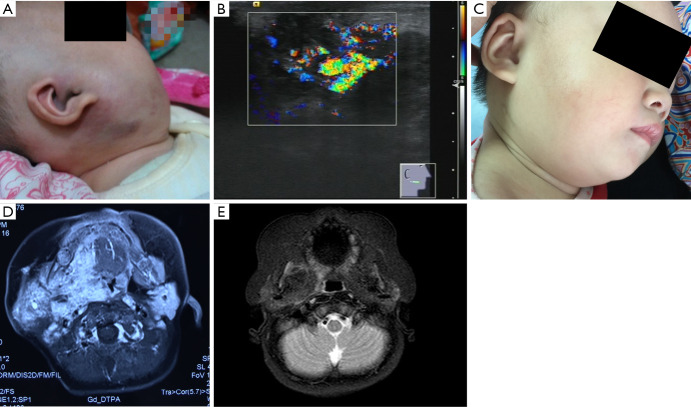
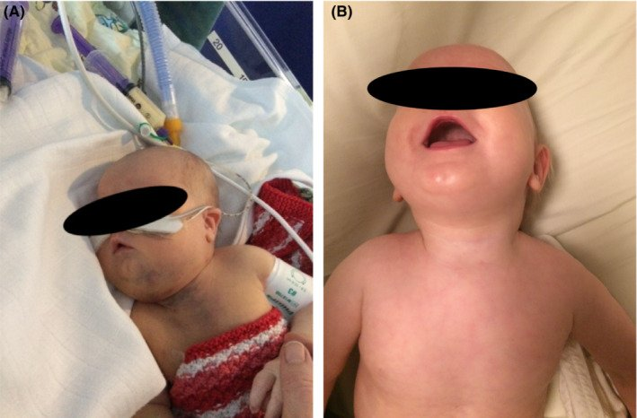
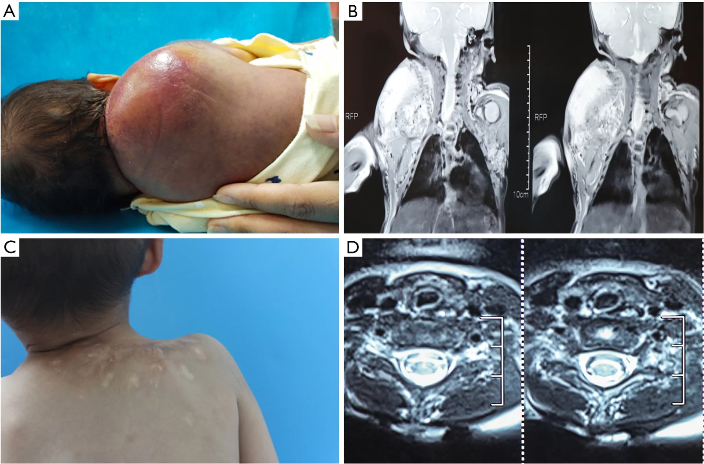

3074 — U mạch dạng Kaposi (KHE) & hội chứng Kasabach–Merritt: khối tím lan sâu + tiểu cầu tụt — vì sao truyền tiểu cầu là sai
Tags: pattern:u-mach pattern:khoi-xam-lan pattern:giam-tieu-cau-tieu-thu pattern:roi-loan-dong-mau pattern:ngam-thuoc-khong-deu vung:da-mo-mem vung:co vung:trung-that protocol:MRI-T2-fatsat protocol:sieu-am-Doppler protocol:sinh-thiet score:sirolimus-trough score:CTCAE
Mức chắc chắn (certainty): tổng hợp y văn (literature synthesis) — ghép tổng quan chẩn đoán – điều trị KHE (Pediatr Investig 2026, PMC13291430), đường lối VASCERN-VASCA (Eur J Pediatr 2026, PMC12701870), loạt 9 nhũ nhi KHE–KMP điều trị corticoid → sirolimus (Transl Pediatr 2025, PMC12552173), ca KHE trung thất có KMP + tràn dịch màng tim (Clin Case Rep 2023, PMC10500048) và loạt 35 trẻ KMP điều trị RFA (Transl Pediatr 2026, PMC13559082). Không có ca do nhóm tự chụp.
Câu hỏi thực hành: bé gái 2 tháng, khối tím–đỏ, chắc, bờ không rõ vùng mặt bên phải, da trên khối căng bóng; xét nghiệm tiểu cầu 46 × 10⁹/L; siêu âm thấy khối giảm âm không đều, mạch máu rất phong phú; MRI T2 fat-sat thấy khối tăng tín hiệu lan vào cơ. Đây là u máu nhũ nhi (theo dõi/propranolol) hay KHE có KMP (cấp cứu huyết học)? Bài chốt ba quyết định: (1) khối mạch máu + tiểu cầu tụt + fibrinogen thấp = KHE/KMP cho đến khi chứng minh ngược — không phải "u máu to"; (2) KHÔNG truyền tiểu cầu theo con số, chỉ khi chảy máu hoạt động/cần mổ — truyền làm u to và tiểu cầu tụt sâu hơn; (3) sirolimus là điều trị bậc một, corticoid dùng ngắn để kiểm soát nhanh, propranolol không đủ khi có KMP. Nối 3048 – U máu gan ở nhũ nhi, 3052 – U mạch máu gan bẩm sinh RICH/NICH, 1808 – Sirolimus ở dị dạng bạch huyết.
1. Tổng quan bệnh học – cơ chế hình ảnh: vì sao khối tím này "ăn" tiểu cầu
- Bản chất: KHE (kaposiform hemangioendothelioma) là u mạch máu thể biên (borderline) theo ISSVA, chiếm ~2% các u mạch máu; ~50% có từ lúc sinh, đa số xuất hiện trong năm đầu (PMC13291430). Mô học: tế bào nội mô hình thoi xếp thành khe hẹp, xen kẽ mô xơ hyalin dày, có thể có vi huyết khối và hemosiderin; miễn dịch: CD31/CD34 dương, PROX1/D2-40/LYVE-1 dương từng ổ (yếu tố bạch huyết), GLUT1 âm và HHV8 âm — hai dấu âm này là chốt để loại u máu nhũ nhi và Kaposi sarcoma (PMC13291430).
- Vì sao có KMP: mạng mạch bất thường trong u giữ và hoạt hóa tiểu cầu, tạo huyết khối vi mạch tại chỗ → giảm tiểu cầu tiêu thụ, tiêu hao fibrinogen, tăng D-dimer; khác DIC ở chỗ PT/APTT thường bình thường hoặc chỉ kéo dài nhẹ (PMC13291430). Đây là lý do truyền tiểu cầu không nâng được số tiểu cầu bền mà còn làm u to nhanh do tiểu cầu giải phóng yếu tố sinh mạch tại u.
- TẠI SAO MRI có hình ảnh đó:
- T2 tăng không đồng nhất vì u gồm khoang mạch máu + phù + mô bạch huyết; các ổ T2 thấp lấm tấm là hemosiderin và xơ hyalin (không phải canxi).
- T1 đồng–giảm tín hiệu, ngấm thuốc lan tỏa, không đều do mạch tân sinh xoắn vặn.
- Trống tín hiệu (signal voids) trong u = mạch tốc độ cao, hay gặp hơn khi có KMP.
- Xâm lấn nhiều mặt phẳng (da → mô dưới da → cơ → xương) và dày da/phù dây mô mỡ quanh u là dấu của thâm nhiễm + rối loạn bạch huyết tại chỗ.
- Ngưỡng định lượng phải thuộc:
| Biến số | Số liệu | Nguồn |
|---|---|---|
| Dịch tễ | 0,071/100.000 trẻ/năm; 0,91/100.000 hiện mắc; ~50% bẩm sinh; thể hỗn hợp ~60% | PMC13291430 |
| KMP | ~40% ca KHE; yếu tố nguy cơ: khởi phát ≤ 1 tháng, u ≥ 6 cm, vị trí sâu/không ở chi | PMC13291430 |
| Tử vong | KHE 10–30% (lịch sử); KMP không điều trị 20–30% | PMC13291430 |
| Xét nghiệm KMP | Tiểu cầu < 30.000 – 100.000/mm³ (ngưỡng thay đổi giữa các nguồn); fibrinogen < 1,6 g/L**; **D-dimer > 0,5 µg/mL; PT/APTT bình thường hoặc kéo dài nhẹ | PMC13291430 |
| Siêu âm | Khối giảm âm hỗn hợp, bờ không rõ, mạch phong phú, "branch-shape" trên Doppler 3D; tới 40% xâm lấn cơ | PMC13291430 |
| Điều trị | Sirolimus đáp ứng > 90%, xét nghiệm máu cải thiện sau 4–7 ngày; corticoid đơn thuần 30–50%; vincristine 60–80%, khởi phát chậm 4–5 tuần, tái phát 10–20% | PMC13291430 |
| Di chứng | Phù bạch huyết mạn ~10% (u ≥ 10 cm, thể hỗn hợp, ở chi); hạn chế vận động ~70% khi có phá xương trong 2 năm | PMC13291430 |
2. Mẫu hình + chẩn đoán phân biệt theo độ sâu và tuổi (gamut)
- Theo độ sâu (phân loại lâm sàng): thể nông — chỉ da/mô dưới da, mảng tím chắc, đau; thể hỗn hợp — nông + sâu, ~60% ca; thể sâu — chỉ trong cơ/xương/khoang cơ thể, không có tổn thương da → dễ chẩn đoán muộn (PMC13291430).
- Theo vị trí: chi (hay nhất) → thân mình → đầu cổ; thể sâu: sau phúc mạc, trung thất, gan–lách, đường tiêu hóa, xương.
- Gamut "khối tím ở nhũ nhi/trẻ nhỏ":
- U máu nhũ nhi (infantile hemangioma): GLUT1 dương, xuất hiện sau sinh vài tuần, thoái triển; không gây KMP.
- U mạch máu bẩm sinh (RICH/NICH): có từ lúc sinh, GLUT1 âm; RICH thoái triển nhanh, NICH không; không gây KMP (khác KHE).
- U mạch dạng chùm (tufted angioma): cùng phổ với KHE, cũng gây KMP, mô học "tuft" trong mô mỡ.
- Kaposi sarcoma: HHV8 dương, bối cảnh suy giảm miễn dịch.
- Dị dạng bạch huyết (lymphatic malformation): nang nhiều thùy, dịch, ngấm thuốc rất ít, không đặc.
- Dị dạng tĩnh mạch: tăng tín hiệu T2, ngấm thuốc từ từ, có sỏi tĩnh mạch (tròn, trống tín hiệu).
- Rhabdomyosarcoma / sarcoma mô mềm: khối đặc, xâm lấn, không giảm tiểu cầu kiểu tiêu thụ.
- Ba câu hỏi chốt: (1) tiểu cầu/fibrinogen/D-dimer thế nào? (2) GLUT1 và HHV8 ra sao (nếu có mô học)? (3) khối có thoái triển tự nhiên không?
3. Bảng so sánh phân biệt (ma trận đối chiếu)
| Thực thể (entity) | Hình ảnh điển hình (US/MRI) | Chốt vào (rule-in) | Chốt loại (rule-out) | Gợi ý xác nhận |
|---|---|---|---|---|
| KHE có KMP | Khối bờ không rõ, thâm nhiễm nhiều lớp, T2 tăng không đều + ổ T2 thấp (hemosiderin/xơ), ngấm thuốc lan tỏa, trống tín hiệu mạch tốc độ cao | Khối mạch máu + tiểu cầu < 100 × 10⁹/L + fibrinogen < 1,6 g/L + D-dimer > 0,5 µg/mL | Tiểu cầu và fibrinogen bình thường + khối thoái triển → không phải KMP | Labs + MRI; sinh thiết chỉ khi không điển hình và không đang rối loạn đông |
| U máu nhũ nhi | Khối nông, bờ rõ hơn, GIẢM dần sau 12–18 tháng, không xâm lấn cơ | GLUT1 dương + xuất hiện sau sinh + thoái triển | GLUT1 âm + xâm lấn cơ + tiểu cầu tụt → KHE | Lâm sàng theo dõi; GLUT1 nếu cần |
| U mạch máu bẩm sinh (RICH/NICH) | Có từ lúc sinh, GLUT1 âm; RICH giảm nhanh, NICH đứng yên | Có từ lúc sinh + GLUT1 âm + không giảm tiểu cầu | Giảm tiểu cầu tiêu thụ → KHE/KMP | Theo dõi thể tích; GLUT1 |
| Tufted angioma | Mảng tím nông, chắc; có thể cùng KMP | Mô học "tuft" + KMP | Khối sâu xâm lấn cơ → nghi KHE | Sinh thiết (khi an toàn) |
| Kaposi sarcoma | Nốt/mảng tím ở da, niêm mạc; có thể lan tạng | HHV8 dương + bối cảnh suy giảm miễn dịch | HHV8 âm + trẻ nhỏ → loại | HHV8, mô học |
| Dị dạng bạch huyết | Nang nhiều thùy, T2 rất cao, vách mỏng, ngấm thuốc tối thiểu | Cấu trúc nang + không ngấm thuốc đặc | Thành phần đặc ngấm thuốc + giảm tiểu cầu → KHE | MRI T2; không cần sinh thiết |
| Dị dạng tĩnh mạch | T2 cao, ngấm thuốc từ từ, sỏi tĩnh mạch | Sỏi tĩnh mạch + ngấm thuốc muộn | Không có sỏi + xâm lấn cơ + KMP → KHE | MRI có thuốc; X-quang/CT tìm sỏi |

Transl Pediatr 2025 (PMC12552173), CC BY-NC-ND 4.0: (A) khối chắc vùng hàm mặt phải, da tím–đỏ, bờ không rõ; (B) siêu âm Doppler màu — khối giảm âm không đều, mạch máu rất phong phú; (C) sau điều trị; (D) MRI T2 fat-sat trục — khối tăng tín hiệu, lan rộng nhiều lớp; (E) T1 trục. Hình ảnh khớp với tiểu cầu 46 × 10⁹/L lúc vào. Ảnh nguyên bản, không chỉnh sửa.
Clin Case Rep 2023 (PMC10500048), CC BY 4.0: (A) 1 tuần tuổi, đỉnh KMP — phù, da tím, khối chắc vùng cổ; (B) sau 1 năm sirolimus + prednisolone, tổn thương da hết. Ca này minh họa KHE tạng sâu (trung thất) không thấy rõ bằng mắt thường nhưng vẫn gây KMP nặng.4. Protocol chụp + xử trí theo ngưỡng
- Xét nghiệm trước hình ảnh (bắt buộc, vì đây là bệnh huyết học): công thức máu + tiểu cầu, fibrinogen, D-dimer, PT/APTT, nhóm máu; nếu tiểu cầu thấp: đánh giá chảy máu hoạt động, không truyền dự phòng theo con số.
- Chẩn đoán hình ảnh:
- Siêu âm Doppler (đầu tay): khối giảm âm hỗn hợp, bờ không rõ, mạch phong phú, "branch-shape" trên Doppler 3D, độ cứng tăng trên elastography; đánh giá xâm lấn cơ (tới 40%) và theo dõi đáp ứng.
- MRI (chuẩn để đánh giá toàn bộ u): T1, T2 fat-sat, sau gadolinium, ± MRA. Đo 3 chiều, ghi độ sâu (da/mô dưới da/cơ/xương), tìm ổ T2 thấp (hemosiderin/xơ) và trống tín hiệu (mạch tốc độ cao), dày da/phù quanh u.
- CT: khi nghi phá xương hoặc cần đánh giá tạng; FDG-PET/CT hỗ trợ hoạt tính bệnh trong ca phức tạp.
- Sinh thiết: tiêu chuẩn vàng mô học nhưng nguy cơ cao khi đang rối loạn đông → không thường quy; chẩn đoán KMP dựa vào lâm sàng + xét nghiệm + hình ảnh.
- Điều trị (theo bậc):
- Sirolimus — bậc một: 0,8 mg/m² uống 2 lần/ngày, nồng độ đáy 8–15 ng/mL (nhũ nhi 2–6 ng/mL vì men CYP3A4 mới đạt 30–40% người lớn lúc sinh); đáp ứng > 90%, tiểu cầu cải thiện sau 4–7 ngày.
- Corticoid — kiểm soát nhanh, dùng ngắn: prednisolone 2 mg/kg/ngày hoặc methylprednisolone TM 1,6 mg/kg/ngày; giảm/ngừng trong 4–6 tuần sau khi tiểu cầu ≥ 100 × 10⁹/L.
- Vincristine: 0,05 mg/kg/tuần × 4 tuần, sau đó hàng tháng × 6 (trẻ > 10 kg: 1,5 mg/m²); đáp ứng 60–80% nhưng chậm 4–5 tuần.
- Propranolol: đáp ứng 80% với liều cao 2 mg/kg/ngày (so với 50% ở 1,5 mg/kg/ngày) nhưng kém hiệu quả khi có KMP; u không có GLUT1 nên cơ chế đích không rõ.
- Can thiệp: nút mạch (TAE) chỉ là biện pháp tạm thời/cứu nguy hoặc chuẩn bị mổ, tiểu cầu cải thiện 4–10 ngày; RFA là lựa chọn ở trung tâm có kinh nghiệm (loạt 35 trẻ: tiểu cầu trung vị 26 → 277 × 10⁹/L sau RFA); phẫu thuật cắt hoàn toàn hiếm khả thi, cắt không hết tái phát ~15%.
- Nguyên tắc truyền máu: không truyền tiểu cầu khi chỉ giảm tiểu cầu đơn thuần; chỉ truyền khi chảy máu hoạt động hoặc chuẩn bị thủ thuật; bù fibrinogen khi < 2 g/L (một số nguồn dùng ngưỡng này trong giai đoạn chu phẫu).
flowchart TD
A[Khối tím ở nhũ nhi/trẻ nhỏ] --> B[Xét nghiệm: tiểu cầu, fibrinogen, D-dimer, PT/APTT]
B --> C{Tiểu cầu dưới 100 × 10^9/L hoặc fibrinogen dưới 1,6 g/L?}
C -->|Không| D[Nghĩ u máu nhũ nhi/RICH-NICH/dị dạng: siêu âm + theo dõi, GLUT1 nếu cần]
C -->|Có| E[KHE có KMP cho đến khi chứng minh ngược: siêu âm Doppler + MRI T2 fat-sat]
E --> F{Không chảy máu hoạt động?}
F -->|Đúng| G[KHÔNG truyền tiểu cầu; theo dõi sát]
F -->|Sai| H[Truyền tiểu cầu/fibrinogen theo chảy máu + chuẩn bị can thiệp]
E --> I[Sirolimus 0,8 mg/m2 x 2/ngày, đích 8-15 ng/mL]
I --> J{Tiểu cầu hồi phục trong 4-7 ngày?}
J -->|Có| K[Giảm corticoid trong 4-6 tuần, theo dõi tái phát + phù bạch huyết]
J -->|Không| L[Thêm vincristine hoặc nút mạch/RFA; xem lại chẩn đoán]
5. Biến thể bình thường và cạm bẫy
- Bẫy 1 — gọi là "u máu" rồi theo dõi: KHE không thoái triển tự nhiên; chờ đợi trong khi có KMP làm tăng tử vong. Dấu phân biệt rẻ nhất: đếm tiểu cầu + fibrinogen ngay lần khám đầu.
- Bẫy 2 — truyền tiểu cầu "cho an toàn": ca trung thất đã ghi nhận truyền tiểu cầu → u to lên, tiểu cầu đáy 5 × 10⁹/L (PMC10500048). Truyền tiểu cầu dự phòng không nâng được tiểu cầu bền và có thể thúc đẩy u phát triển.
- Bẫy 3 — chẩn đoán KMP là DIC/nhiễm khuẩn huyết: KMP có PT/APTT gần bình thường, chỉ giảm tiểu cầu + fibrinogen thấp + D-dimer cao; cấy máu âm, không có ổ nhiễm. Điều trị là chống u, không phải kháng sinh.
- Bẫy 4 — sinh thiết khi đang chảy máu: sinh thiết trong pha rối loạn đông có thể gây chảy máu không cầm; không cần nếu lâm sàng + xét nghiệm + hình ảnh điển hình.
- Bẫy 5 — thể sâu không có tổn thương da: KHE sau phúc mạc/trung thất biểu hiện bằng chèn ép, đau, thiếu máu, giảm tiểu cầu; không có "khối tím" để nhìn → dễ bỏ sót. Ở trẻ có KMP không rõ nguyên nhân, MRI ngực–bụng là bước tiếp theo.
- Bẫy 6 — "hội chứng Kasabach–Merritt" bị dùng cho u máu gan khổng lồ: KMP là thực thể đặc hiệu của KHE/tufted angioma; u máu gan khổng lồ ở người lớn có giảm tiểu cầu do bắt giữ trong u nhưng không phải KMP — điều trị và tiên lượng khác.
- Bẫy 7 — ổ T2 thấp bị đọc là canxi: đó là hemosiderin/xơ; CT không thấy canxi tương ứng. Đừng vì "có canxi" mà nghĩ u khác.
- Cạm bẫy hình học: khối ở chi dễ bị đọc nhỏ hơn thực tế trên siêu âm vì chỉ thấy phần nông; MRI mới đo được độ sâu và xâm lấn cơ, cần cho kế hoạch điều trị và theo dõi thể tích.
6. Tự lượng giá — Blind Quiz
Ca 1 — Bé 2 tháng, khối tím vùng mặt, tiểu cầu 46 × 10⁹/L.
- Gợi ý lâm sàng: khối chắc, da tím–đỏ, bờ không rõ, vùng hàm mặt phải; tiểu cầu 46 × 10⁹/L; không sốt.
- Câu hỏi: (B) và (D) cho thấy đặc điểm gì của u? Vì sao không được truyền tiểu cầu dự phòng? Ba chẩn đoán phân biệt?
Bấm để hiện đáp án
- Dấu hiệu (findings): (B) siêu âm Doppler màu — khối giảm âm không đều, mạch máu phong phú; (D) MRI T2 fat-sat — khối tăng tín hiệu, thâm nhiễm nhiều lớp, không có bờ rõ.
- Chẩn đoán (diagnosis): KHE có KMP (tiểu cầu 46 × 10⁹/L).
- Phân biệt: u máu nhũ nhi (GLUT1 dương, thoái triển, không giảm tiểu cầu), RICH/NICH (có từ lúc sinh, GLUT1 âm), dị dạng bạch huyết (nang, ngấm thuốc ít).
- Điều trị: methylprednisolone TM để kiểm soát nhanh (ca này tiểu cầu lên 156 × 10⁹/L trong 4 ngày), sau đó sirolimus duy trì; không truyền tiểu cầu khi không chảy máu.
- Nguồn ảnh: Transl Pediatr 2025 (PMC12552173), CC BY-NC-ND 4.0.
Ca 2 — Nhũ nhi 1 tuần tuổi, khối cổ, phù và tím da, suy hô hấp nhẹ.
- Gợi ý lâm sàng: tiểu cầu 26 × 10⁹/L lúc sinh, giảm dần; fibrinogen giảm từ ngày 2; tràn dịch màng tim xuất hiện trong quá trình điều trị.
- Câu hỏi: Vì sao khối ở trung thất lại nguy hiểm hơn khối ở da? Truyền tiểu cầu trong ca này gây hậu quả gì?
Bấm để hiện đáp án
- Dấu hiệu (findings): (A) phù, da tím, khối chắc vùng cổ–ngực trên ở trẻ 1 tuần tuổi; (B) sau 1 năm điều trị, tổn thương da hết.
- Chẩn đoán (diagnosis): KHE trung thất có KMP, biến chứng tràn dịch màng tim và nhiễm trùng nặng.
- Vì sao: khối sâu không thấy bằng mắt, chèn ép đường thở/tim; KMP gây giảm tiểu cầu nặng. Trong ca này, truyền tiểu cầu làm u to lên và tiểu cầu tụt sâu (đáy 5 × 10⁹/L) → sau đó chỉ truyền khi chảy máu nặng.
- Điều trị: prednisolone + vincristine + sirolimus, kiểm soát KMP và u.
- Nguồn ảnh: Clin Case Rep 2023 (PMC10500048), CC BY 4.0.
Ca 3 — Nhũ nhi 1 ngày tuổi, khối vùng lưng, tiểu cầu 15 × 10⁹/L.

- Gợi ý lâm sàng: khối đỏ tím lớn vùng lưng từ lúc sinh; tiểu cầu 15 × 10⁹/L, D-dimer tăng, fibrinogen giảm.
- Câu hỏi: MRI (B, D) cho thấy u lan tới đâu? Vì sao "khối ở da" lại có thể liên quan tủy/cột sống?
Bấm để hiện đáp án
- Dấu hiệu (findings): (B) MRI cột sống/mô mềm — khối lớn, tín hiệu hỗn hợp, lan từ da → mô dưới da → cơ sâu, chạm mỏm gai/mỏm ngang; (D) trục — khối xâm lấn cơ cạnh cột sống.
- Chẩn đoán (diagnosis): KHE thể hỗn hợp/sâu vùng lưng có KMP, xâm lấn cơ và cấu trúc cạnh cột sống.
- Vì sao: KHE phát triển thâm nhiễm theo mặt phẳng chứ không tạo vỏ; tổn thương sâu có thể chèn ép rễ/tủy và làm hạn chế vận động.
- Điều trị: ca này được đốt nhiệt (RFA) sau khi chuẩn bị huyết học; loạt 35 trẻ cho thấy tiểu cầu trung vị 26 → 277 × 10⁹/L sau RFA.
- Nguồn ảnh: Transl Pediatr 2026 (PMC13559082), CC BY-NC-ND 4.0.
Bài liên quan chéo
- 600 – Tổng quan Nhi khoa
- 3048 – U máu gan ở nhũ nhi
- 3052 – U mạch máu gan bẩm sinh RICH/NICH
- 3069 – An toàn propranolol ở nhũ nhi: hạ đường huyết, nhịp chậm, theo dõi 1–2–3–4 giờ
- 1808 – Sirolimus ở dị dạng bạch huyết
Ảnh
- 3 ảnh: CC BY 4.0 (Clin Case Rep 2023, PMC10500048) và CC BY-NC-ND 4.0 (Transl Pediatr 2025, PMC12552173; Transl Pediatr 2026, PMC13559082) — cả ba dùng nguyên bản, không crop/ghép/chỉnh sửa; chi tiết trong
images/CREDITS.md.
Không dùng để chẩn đoán độc lập khi chưa có người hướng dẫn.